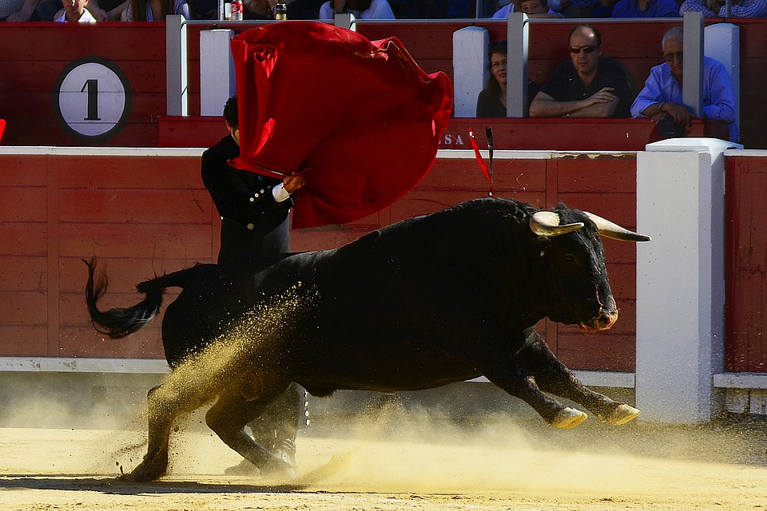
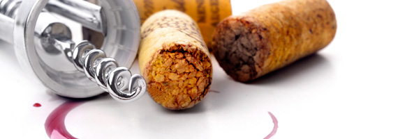
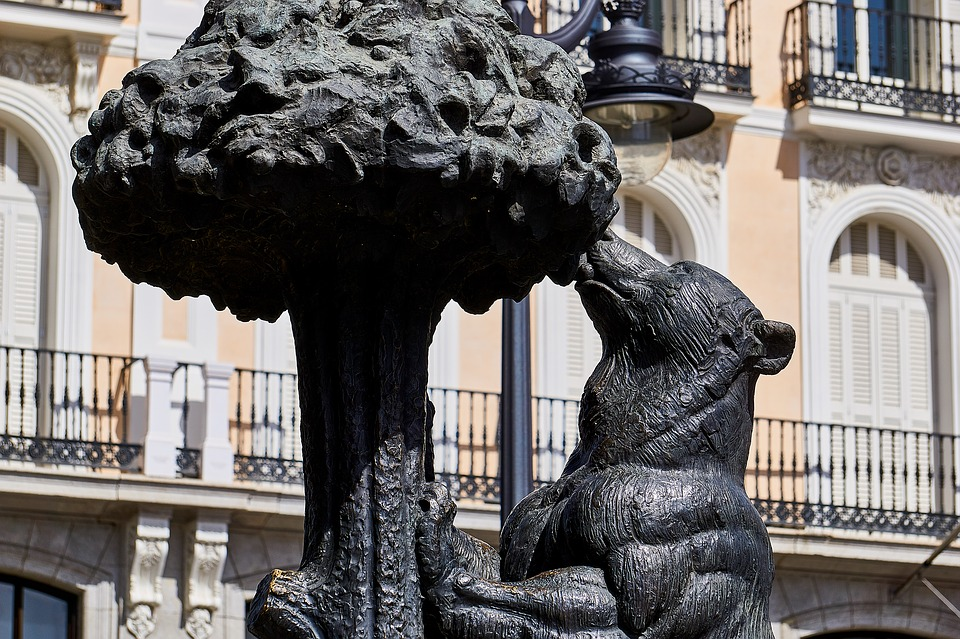

Несколько интересных фактов об Испании
Испания – европейская страна, расположенная на Пиренейском полуострове. Территория Испании разделена на 17 автономных регионов. В столице страны, Мадриде, находятся Королевский дворец и музей Прадо, где хранятся произведения европейских мастеров. В Сеговии можно посетить средневековый замок (Алькасар) и увидеть хорошо сохранившийся римский акведук. Барселона – столица автономного сообщества Каталония. Облик этого города определяют многочисленные причудливо-фантастические творения архитектора Антонио Гауди, среди которых храм Святого Семейства.
- Столица: Мадрид
- Форма правления: конституционная монархия
- Названия жителей: испанец, испанка, испанцы
- Население: 46,94 миллиона (2019 г.) Евростат
- Официальный язык: Испанский язык
Национальное животное
Наряду с национальным символом — корридой в Испании, не менее почитаем в этой стране и само животное — бык. Поэтому, скульптура черного быка, часто встречаемая в самых неожиданных местах регионов, является неофициальным испанским символом.
Испанцы считают, что цвета их национального флага — желтый и красный, вольно или невольно символизируют страстный танец и желтый песок арены боя для быков. А теперь подробнее о каждом национальном символе Испании.
Коррида — это не просто развлечение, а национальный вид искусства, являющийся символом Испании. Это действо имеет определенные правила, ритуалы, и представляет собой захватывающий спектакль. Коррида начинается с традиционного шествия матадоров, пикадоров, официальных лиц на лошадях.
Вина Испании
В Испании вино производится в винодельческих регионах в 14 областях: Андалусия, Арагон, Валенсия, Галисия, Кастилия Леон, Кастилия Ла Манча, Каталония, Мадрид, Мурсия, Наварра, Риас Байшас, Риоха, Страна Басков, Херес де ла Фронтера. Регионами виноделия также считаются Балеарские и Канарские острова.
- Joven (Ховен) - молодое вино урожая этого года.
- Crianza (Крианса) - вино минимум двухлетней выдержки (мин. 6 месяцев в дубовых бочках).
- Reserva (Ресерва) - вино минимум трехлетней выдержки (мин. 1 год в дубовых бочках).
- Gran Reserva (Гран Ресерва) - вино минимум пятилетней выдержки
Фламенко
Истоки этого древнего танца берут свое начало в Андалусии. Страстный испанский бой на гитаре, горделивые взмахи руками, темпераментный стук каблуков — основа легендарного стиля, взявшего самое лучшее из народного искусства древних басков, арабов, племен берберов и цыган.
В XVIII веке в Испании повсеместно появляется большое количество студий и салонов, где искусству исполнения «фламенко» обучали на профессиональном уровне, тем самым, подтверждая тот факт, что фламенко является символом Испании. В XIX веке этот стиль получает такое широкое распространение, что данные композиции начинают исполнять симфонические оркестры и профессиональные балетные труппы.
Медведь и земляничное дерево — символ Мадрида
Скульптура «Медведь и земляничное дерево» - символ Мадрида
Символом Мадрида считается, изображенный на гербе города, медведь, тянущийся за плодами земляничного дерева. Появление именно такого символа Мадрида имеет несколько исторических версий, о которых мы вам хотим рассказать.
Появление медведя на гербе Мадрида связывают с тем, что войска короля Альфонсо XI использовали это изображение на знаменах во время Реконкисты — периода войны с маврами за возвращение христианских земель.
Таким образом, воины «заряжались» силой и мощью этого животного, которое в больших количествах обитало в окрестностях Мадрида в эпоху Средневековья.
Другой версией превращения медведя и земляничного дерева в символ Мадрида является вполне официальное событие и обычное в XIII веке событие — королевский указ о разделении угодий между светской и церковной властью.